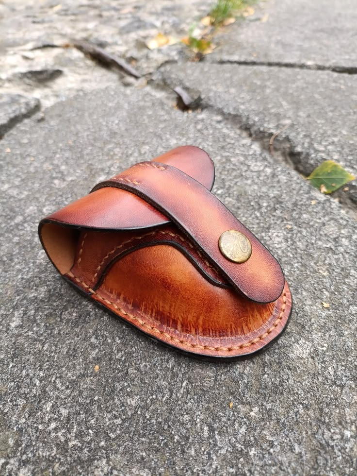

Handmade Leather EDC Belt Pouch, Minimalist Leather Organizer for Men, Knife & Lighter Holder, Bushcraft Gear, Gift for Him
A handmade leather EDC belt pouch designed to keep coins, cards and small everyday essentials organized and easy to access.
Price: $69 USD
Buy on EtsyHandmade Leather EDC
Keep small everyday essentials organized and close at hand with this handmade leather EDC belt pouch. Its compact design is suited to carrying coins, cards, a knife, lighter, multitool or other small tools for everyday use, bushcraft and practical outdoor carry.
Made from durable genuine leather, the pouch features strong hand stitching and a secure belt attachment for convenient access while on the move. The leather develops a distinctive patina over time, making each pouch unique. Its minimalist format keeps your essentials together without adding unnecessary bulk.
Dimensions: - Height: 4.72 inches (120 mm) - Width: 3.45 inches (85 mm) - Depth: 1.77 inches (50 mm)
The pouch fits standard belts up to 1.96 inches wide (up to 5 cm).
A practical handmade gift for a husband, boyfriend, father or anyone who appreciates durable leather accessories and well-organized everyday carry.
Product Details
- Material: Genuine leather
- Construction: 100% handmade with strong hand stitching
- Dimensions: 4.72 inches (120 mm) high × 3.45 inches (85 mm) wide × 1.77 inches (50 mm) deep
- Belt compatibility: Fits standard belts up to 1.96 inches wide (up to 5 cm)
- Designed for: Coins, cards, a knife, lighter, small tools and other everyday-carry essentials
- Category: EDC belt pouch
Get This Handmade Leather Product
This handmade leather product is available through the LeatherBagsKingdom Etsy shop.
Buy on Etsy